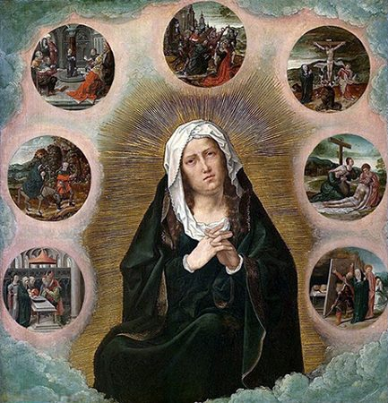
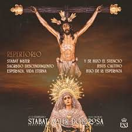
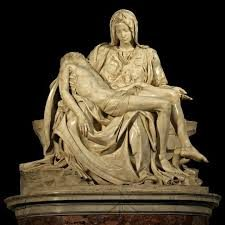

Los Siete Dolores de la Virgen

La tradición de la Iglesia ha condensado en siete episodios específicos el sufrimiento de María a lo largo de su vida terrenal, siguiendo el símbolo de la espada mencionada por Simeón. Cada uno de estos dolores ilumina una faceta distinta de la compasión materna de María y la vincula a un episodio concreto del relato evangélico. El primero es la Profecía de Simeón (Lc 2,34-35): cuando María presenta a Jesús en el Templo de Jerusalén, el anciano profetiza que el Niño será "signo de contradicción" y que una espada traspasará el alma de la madre. Esta espada es, para la teología, el anuncio de todo el sufrimiento venidero.
El segundo dolor es la Huida a Egipto (Mt 2,13-15): obligada a abandonar su tierra en plena noche para salvar la vida del Niño, María experimenta el exilio, el miedo y la persecución. El tercer dolor es el Extravío del Niño en el Templo (Lc 2,41-50): durante tres días angustiantes, María y José buscan a Jesús sin encontrarlo, prefiguración del triduo pascual y de la separación definitiva de la muerte. El cuarto dolor es el Encuentro de Jesús camino del Calvario: María ve a su Hijo cargando la cruz bajo los golpes de los soldados, incapaz de hacer otra cosa que acompañarle con su presencia silenciosa.
El quinto y más intenso de todos los dolores es la Crucifixión y muerte de Jesús (Jn 19,25-27): María permanece de pie junto a la cruz mientras su Hijo agoniza, recibe la encomendación del discípulo amado y asiste al momento en que el corazón de Jesús es traspasado por la lanza del soldado. El sexto dolor es el Descendimiento de la Cruz: el cuerpo sin vida de Jesús es depositado en los brazos de su madre, escena inmortalizada en la Pietà. El séptimo y último dolor es la Sepultura de Jesús: María acompaña el cuerpo de su Hijo hasta el sepulcro y asiste a su cierre, quedando sola ante el silencio de la piedra, en la espera que solo la fe puede sostener.
La Espada del Profeta Simeón
La frase de Simeón en el Templo de Jerusalén —"y a ti misma una espada te atravesará el alma" (Lc 2,35)— ocupa en la mariología un lugar de extraordinaria densidad teológica. Esta palabra profética, pronunciada sobre el Niño recién presentado a Dios, funciona como una clave hermenéutica que permite leer toda la vida de María bajo el signo de la compasión: su existencia entera es la de una madre que camina conscientemente hacia el dolor de perder a su Hijo de un modo violento e injusto. No es un dolor accidental, sino constitutivo de su misión: María es madre del Redentor precisamente en tanto que comparte su pasión.
Los Padres de la Iglesia y los grandes teólogos medievales meditaron profundamente sobre esta imagen. Orígenes interpretó la espada como la duda que atravesó el alma de María durante la Pasión, cuando el escándalo de la cruz pudo turbar incluso su fe. San Bernardo de Claraval, en cambio, subrayó que la espada de Simeón era la propia muerte de Cristo, que atravesó el corazón maternal de María de manera aún más penetrante que la lanza que traspasó el costado de Jesús: "si en Cristo no hubo muerte del alma, sí la hubo en María, y por eso a ella, más que a él, le atravesó la espada." Esta compasión activa de María —su participación consciente y doliente en la obra redentora— es uno de los fundamentos de la doctrina sobre su papel corredentriz, que la teología mariana ha desarrollado ampliamente aunque sin haber sido definida dogmáticamente.
Hoy, la Iglesia celebra la memoria de Nuestra Señora de los Dolores el 15 de septiembre, justamente el día después de la Exaltación de la Santa Cruz. Esta proximidad litúrgica es profundamente significativa: no se puede contemplar la Cruz sin pensar en la madre que estaba de pie junto a ella, y no se puede honrar a la Mater Dolorosa sin remitirse a la Cruz de su Hijo. La fiesta de los Dolores de María es, en este sentido, la cara materna y humana de la gran festividad de la Cruz.
El Stabat Mater: Liturgia, Teología y Música

El Stabat Mater Dolorosa es uno de los poemas litúrgicos más célebres de la historia de la Iglesia, una secuencia medieval que describe a María de pie (stabat) junto a la Cruz, llorando y contemplando a su Hijo crucificado. La autoría del texto es atribuida tradicionalmente al fraile franciscano Jacopone da Todi (1230–1306), aunque algunos estudiosos la disputan. En veinte estrofas de intenso lirismo, el poema describe el dolor de María, invita al fiel a asociarse a ese dolor con compasión y concluye con una petición de intercesión para la hora de la muerte. Su estructura meditativa lo convierte en una de las piezas más completas de la espiritualidad de la compassio mariana.
El Stabat Mater fue incorporado al Misal Romano como secuencia de la Misa de los Dolores de María, y su uso en la liturgia de la Semana Santa y del Viernes Santo le garantizó una difusión inmensa en toda la Iglesia occidental. Fuera del ámbito litúrgico, el texto inspiró algunas de las composiciones musicales más sublimes de la historia: el Stabat Mater de Giovanni Battista Pergolesi (1736), compuesto pocas semanas antes de su muerte a los 26 años y considerado una de las obras maestras del Barroco italiano; las versiones de Joseph Haydn (1767), Gioachino Rossini (1832-1841) y Giuseppe Verdi (1897), que transformaron el texto en una exploración profunda del dolor humano desde distintas estéticas musicales. En el siglo XX, compositores como Krzysztof Penderecki y Arvo Pärt han retomado el poema, demostrando su inagotable capacidad de inspiración.
Arte e Iconografía

La representación más universal de Nuestra Señora de los Dolores es sin duda la Pietà: la imagen de María sosteniendo en su regazo el cuerpo inerte de Jesús descendido de la Cruz. La versión más célebre de todas es la esculpida por Miguel Ángel Buonarroti entre 1498 y 1499, conservada en la Basílica de San Pedro del Vaticano: una obra de perfección técnica y hondura espiritual difícilmente superable, en la que María aparece joven, serena y de una belleza sobrenatural, como si el dolor no la hubiera consumido sino purificado. El propio Miguel Ángel, interrogado sobre la juventud de la figura mariana, respondió que la virginidad preserva de la corrupción del tiempo.
La iconografía española de la Mater Dolorosa, muy influida por la espiritualidad de la Contrarreforma y por la cultura de la Semana Santa, desarrolló un estilo propio marcado por el realismo emocional: la Virgen de los Dolores aparece vestida de negro o de morado oscuro, con el corazón traspasado por siete espadas visibles —una por cada dolor—, el rostro surcado de lágrimas y la mirada cargada de una pena que convoca la compasión del observador. Las grandes tallas procesionales de Gregorio Fernández, Juan de Mesa o Pedro de Mena son expresiones cumbres de este arte que busca conmover al pueblo e invitarlo a participar emocionalmente en la Pasión de Cristo a través del dolor de su madre.
En la tradición iconográfica centroeuropea, la imagen de la Virgen de los Dolores adoptó formas más serenas y contemplativas, a menudo representada en oración ante la Cruz o meditando sobre los instrumentos de la Pasión, subrayando la dimensión contemplativa del dolor más que su expresión emocional. Esta dualidad de estilos refleja la riqueza del imaginario cristiano al abordar uno de los misterios más profundos de la fe.
Devoción y Espiritualidad: Aprender a Sufrir con María
La devoción a los Dolores de María tiene como uno de sus frutos espirituales más específicos enseñar a los fieles a relacionarse con el propio sufrimiento desde la fe. Contemplar a María de pie junto a la Cruz —no derrumbada ni desesperada, sino doliente pero firme— ofrece un modelo de cómo afrontar el dolor humano sin negarle su peso real pero sin dejarse destruir por él. En una cultura que tiende a negar o anestesiar el sufrimiento, la figura de la Mater Dolorosa propone una alternativa radicalmente distinta: el dolor puede ser asumido, ofrecido y transformado cuando se vive en unión con el dolor redentor de Cristo.
La Orden de los Siervos de María (Servitas), fundada en Florencia en 1233 por siete mercaderes que abandonaron sus negocios para consagrarse a la Virgen, hizo de los Dolores de María el centro de su carisma y espiritualidad. Los Servitas propagaron la Corona Dolorosa —una forma de rezo sobre los siete dolores— y contribuyeron decisivamente a que la fiesta litúrgica de los Dolores fuera extendida a toda la Iglesia. El papa Pío VII, en 1814, la elevó al rango de fiesta universal, y el calendario litúrgico renovado tras el Concilio Vaticano II la confirma como memoria obligatoria el 15 de septiembre.
En el plano de la espiritualidad práctica, la contemplación de los Siete Dolores ha dado origen a numerosas formas de oración: la Via Matris (el "Camino de la Madre", paralelo al Via Crucis), el rezo de los Siete Avemarías en honor a cada dolor, y diversas novenas y coronillas. Estos instrumentos devocionales han ayudado a generaciones de fieles —especialmente a quienes atravesaban enfermedades, duelos y pruebas graves— a encontrar en María una compañera de sufrimiento y una intercesora poderosa ante aquel que "cargó con nuestros dolores" (Is 53,4).